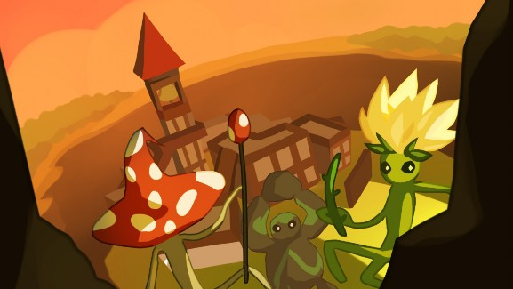

Bri Epstein (bdepst) Dev Blog 5: 12/12/21
Welcome to my last devblog for Project Bloom! Unfortunately I would have liked to have a bit more time to work on final polish before release, but it is finals season…

As it was the final sprint, the main focus was fixing bugs to prepare for release, as opposed to adding new
content.
The first main time investment was weekly meetings. These weekly meetings involve discussing work for the coming week and deciding what was left to be done. They ended up taking around 4 hrs. There was also the final 3 hour showcase, where we got to see Bloom being shown off and receive feedback from players.
Additionally, I attended 2 hours of playtests, which allowed us to get some better ideas for what final improvements were left to be done before we could release the game. It was great hearing that our playtester actually really enjoyed our game and had fun with it!
Finally, with the showcase coming up, the rest of the programming team and I had to buckle down and largely focus on fixing bugs, whether game-breaking or frustrating. For example, fixing settings to save in certain cases where they might be overwritten. On the other hand, there were major issues like certain weapon functionalities being broken after respawning due to certain states not being cleared. Also, I added a retro mode to make the game feel quite like Doom in appearance. Overall, all the playtesting to find bugs and fixing those bugs in the rush before the showcase took me 12+ hours.
Time investment:
Meetings | 4 hrs |
Showcase | 3 hrs |
Playtests | 2 hrs |
Playtesting and Bugfixes | 12+ hrs |
Total | 21+ hrs |